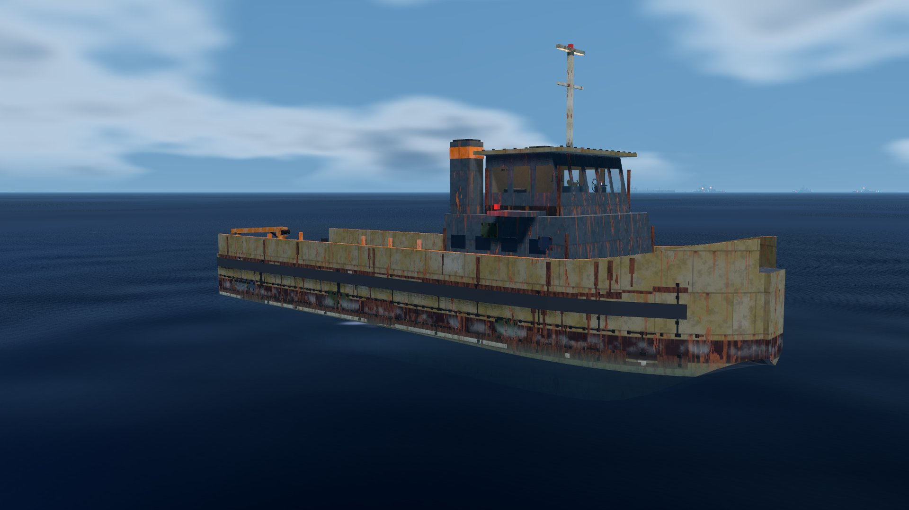

Wanted · The Flotilla
Tiago "Taxman" Fonseca
The world of Runners, as planned. The game is in development and details will change.

Wanted by the posters who suffer from The Flotilla. Number 2 of their ten.
- Known as
- Taxman
- Role
- Takes the tax
- Ship
- Convoy 33, a Mule
- Hunting ground
- The Brazil side of the Long Fetch
- Known for
- Taking the Convoy's tax, four containers from every ship he meets, and writing a receipt.
The story
A Brazilian port clerk who sees nothing wrong with taxes, as long as they're written down. The Convoy taxes every ship it meets. He's never taken more than four boxes.
How they fight
He doesn't fight much. He calls the picket boats if you refuse.
A tax collector. Out here. Of course there is.Relic, on the radio
Her hull
